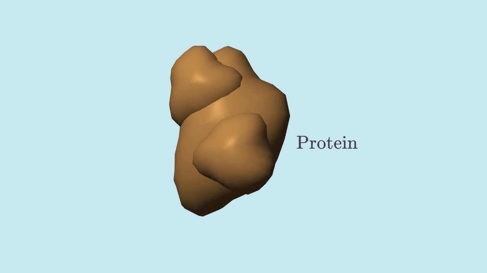
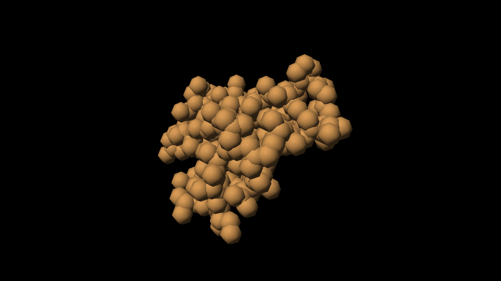
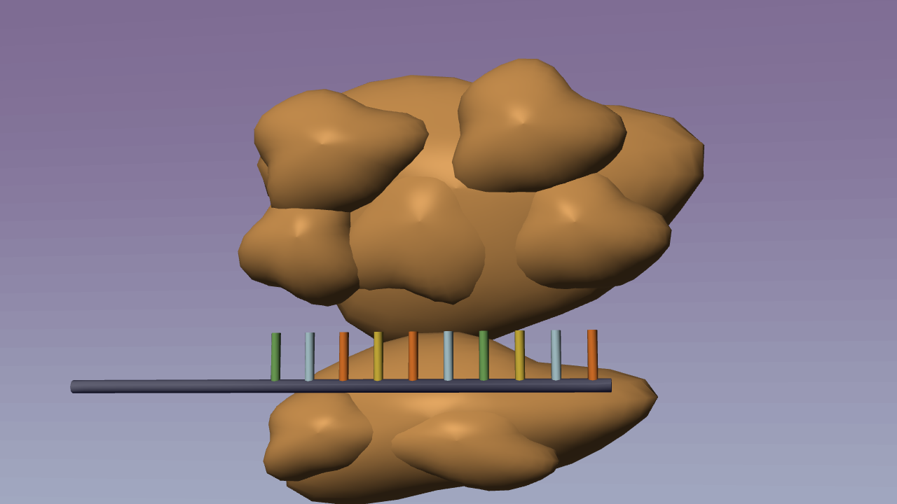
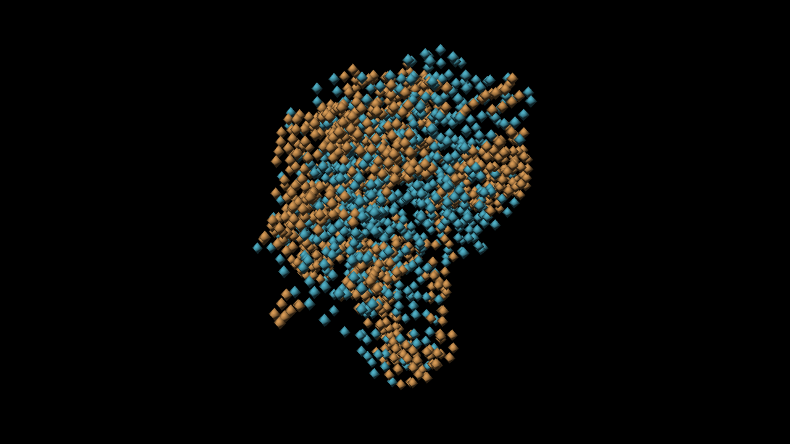

Molecular library: before → after
New coordinate import and batched geometry are implemented on amilibsam. Existing film is unchanged.
Protein


Ribosome


Capability comparison, not identical structures or matched camera shots. New geometry follows deposited coordinates, but coarse beads and subsampling remain schematic. This adds structural data and efficient authoring; it does not yet supply smooth molecular surfaces or update the film.